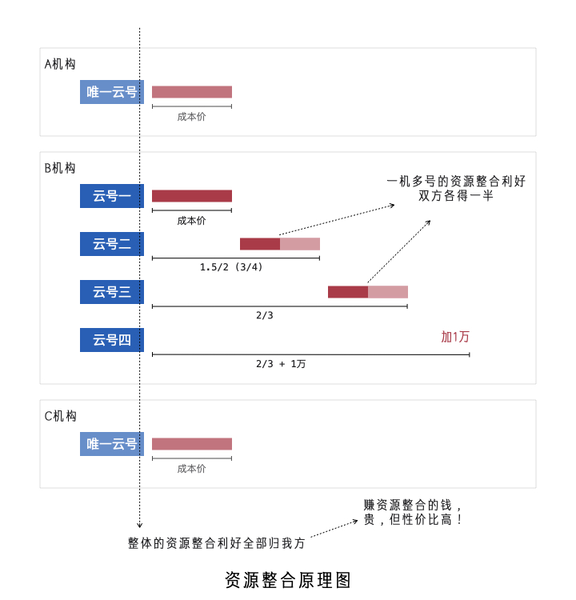
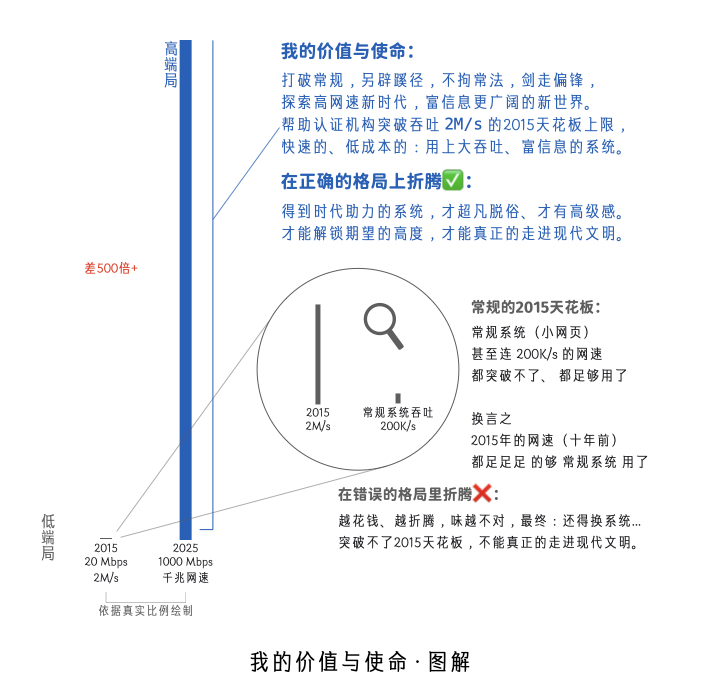
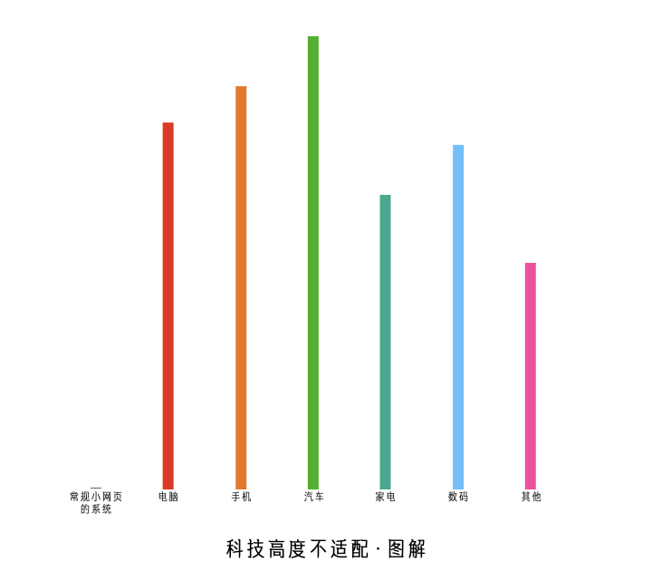

年费深度解读
为什么交年费、为什么贵？
时代不一样了
网速的高度，决定着系统文明的层级，或者是说认证机构的消费档次
过去低网速：200K/s、1M/s、2M/s
怎么做，都是「初步信息化」，无非是谁的流程更合理一些而已
谁都实现不了「信息高级化」（富信息），实现了网速也带不动
富信息 == 做梦（拉不开层级：网速决定了上限，只能是小网页）
低网速时期的系统形势：别管啥系统，大机构、小机构谁都上得起
低网速时期的系统格局：「拉不开层级」
只有流程合理之分，没有文明层级代差
你想多花钱弄好的，也拉不开多大差距（就算是你当时花5000万弄成的好系统，将来也得扔）
将来也得扔：
穷信息系统是不可能改进成富信息系统的
就像
自行车不可能改进成真正的汽车，就得扔
不换系统：
时代免费给你的油（高网速），得天天扔
终将富信息（早早晚晚的事），孰轻孰重？
你再也办不了 2兆、4兆、10兆 的宽带了
都没人卖你了 淘汰了 服务商再不会出了
还继续用适配 低网速 的系统吗？怀旧吗？ 😄
现在高网速：20M/s、100M/s、千兆、无限
富信息不再是做梦，时代解锁新选择：富信息，这就拉开层级了
谁有钱、谁就高级（网速拉开层级：除了小网页，还可以富信息）
就像买车、烧的起油一样，谁的系统更猛、烧的起网速，谁就高级
高网速时期的系统形势：依然还有小系统，10万、20万买到手能用
但有的机构是花了大钱交年费用的富信息，小系统一定是比不了的
高网速时期的系统格局：「拉开层级了」
不唯流程合理之分，而有文明层级代差
高等文明的富信息，高级化的各种更合理，低等文明是没有办法想象的
富信息文明层级 (前卫+先进+厚重)
用上 高维、多彩、灵动 等新的科技点
高信息密度，更清楚、更明白，更高雅
本质是研究：「高网速」时代赋能得用🛸，前卫性/颠覆性 在这里
穷信息文明层级
这个表、那个表、一堆表、非常的单薄
信息密度低，相对难使用，相对碎片化
本质是折腾：2M宽带就能用的旧毛线🧶，残酷的是：不值得折腾了
为什么「不值得折腾了」：
「系统/网速」 好比 「出行/路况」
论「出行」，依现在世界之路况
值得研究：发动机、变速箱、底盘...
不值得折腾：脚蹬子、车链子、三角座垫...
论「系统」，依现在世界之网速
值得研究：高级功能体系，富信息、大吞吐...
不值得折腾：低维列表，这个表、哪个表、一大堆...
富信息一出一比一显，原来的就显得不好了
显得碎片化，信息不集中，各种不好不高级
差距本质：
有钱机构上「富信息」，无钱机构还用「穷信息」
「富信息」依靠高维、上色、灵动，及大吞吐，所拥有的高级优势，「穷信息」没有任何平替方案
通俗的讲：
有钱机构的新系统：看的是一艘船、一看就懂
一个请求，就传来 50M 的数据：以高维、多彩的方式大面积呈现，让人一看就懂、清楚明白
无钱机构的旧系统：看的是小木块、脑补局部
一个请求，只传来 拉开层级，其实就是两个文明：
就像「拿按钮手机的人」和「用智能手机的人」，谈论「手机」一样
都在说「手机」，实际不是一个东西
「按钮手机」在显示上，太过单薄，很多东西都不一样
富信息系统的道理和这个其实差不多，贵，有贵的道理
你买到手死放着、或者自部署花不了几个钱的那个系统
和
别人每年交年费，你觉得太贵不值的那个系统
或许
真不是一个东西，差着“十万八千里”
过去网速低，恰如过去村里面坑坑洼洼、泥泞不堪，没人买车一样，没人富信息、只能是自行车
现在网速高，恰如现在村里面路修的好，阳光大道，有人买车一样，交年费，用富信息享受时代
我的观点是：
依目下的时代环境来看，
如果一个认证机构还没用上高维、多彩的富信息，
那么说明这个机构的信息化建设，还没有走进这个时代应该达到的现代文明。
就是说系统还停留在：15年、10年，那个时候的文明，这些年发展最快的其实是网速
系统文明早就迭代了，系统真正的现代文明是富信息，任何低密度信息 Out ，时代不一样了
认清形势，就是贵的
以下是我对「认证机构管理系统」这个行业的「时代划分」及「未来趋势」的判断：
| 时间 | 系统时代 | 时代标志 | 时代区别 | 起点界定 |
|---|---|---|---|---|
| 2000-2025 | 穷信息时期 | 列表、表单，初步堆成 | 小网页 | 2000年，ADSL 2Mbps 200K/s |
| 2025-2055 | 前富信息时代 | 高维、多彩，体系建设 | 大吞吐 丨 没有泛化底蕴 | 2025年，流量卡 200Mbps 20M/s |
| 2055-XXXX | 后富信息时代 | 高维、多彩，生态发展 | 泛化底蕴形成 | 2055年，保守估计，实际可能2065年 |
2000年以前
由于那个时候网速非常的低，不到2KB/s，不大可能有联网的系统，只能是一些单机版的小软件
2000-2025
随着 ADSL 2Mbps 200K/s 的普及，网页类系统具备了使用的条件，但也要延后5年左右才产生
2025-2055
以一般流量卡达到 20M/s 为标志，富信息具备了使用条件，以「大吞吐」的优势颠覆「小网页」
什么叫作以「大吞吐」的优势颠覆「小网页」？
「大吞吐」相对于「小网页」属于是「闭着眼睛、不用看你，百分百的碾压」
这就好比：
一支弓箭，再用好材质，再做的精细，都没用，无论怎样都比不上一发炮弹。
就相当于：
2025以后：这个表、那个表、一堆表，弄系统，最后折腾完就是一堆小网页，
无论如何，也比不上别人一个请求就传输50M数据的那种， 而且是望尘莫及。
「体系化的富信息」，当然好，但由于「没有泛化底蕴」，开发商就很少、开发成本也高、当然贵
这个时期上富信息，就相当于：70年代买车、80年代住楼、90年代用大哥大、 2010年用苹果手机
贵的前卫！当然我说的是这种：体系化的全面用上富信息，不是零散的、片面的，不成体系的那种
贵的前卫：
多花点钱，交年费用，比省钱的，更值得，前卫的东西不是所有人都懂，有些人就是要错过前卫的
目前我们正处于这一阶段：价格就是贵的，但性价比极高，多花点钱真能比别人牛太多的特殊时期
有些人就是要错过前卫的：
系统每年投入的费用（年费），几乎是零：
如果
网速是 200K/s 1M/s 2M/s ，看不出什么大问题
但是
网速是 20M/s 100M/s 1000M/s ，那就有问题了
就是说：你的信息化建设，每年花出去的钱，太少、或者没有，
水涨了船没高，你以为省钱了，实际上是时代资源白白浪费了。
符合时代、正确消费：
和「高网速」对应的「大吞吐」的钱，每年都能花得出去，才是享受时代、才是一身贵气、才是福泽深厚...
特殊时期：2025-2055
这就好比 手机 的 特殊时期，大概是：2010年-2015年
认证机构 系统 的 特殊时期，应该是：2025年-2055年，越前面当然越惊艳！
直白的讲：
我设计的这个富信息的系统，
一定像 iPhone 4 颠覆 手机行业 一样，
颠覆 认证机构管理系统 这个行业，而且连续30年都是巅峰！
—— 这是宿命论、注定的，天命如此，谁也改变不了。
2055-XXXX
泛化底蕴早晚会形成，所谓的泛化底蕴就是指：技术发展，产生低成本就能富信息的成熟底层框架
泛化底蕴形成了，未必就都是好事：70年代造车，和现在造车，科技含量是不一样的，好坏易分
一大堆人都能做，你就很难分辨出：谁真懂设计，谁在瞎糊弄，甚至会劣币驱逐良币，好坏难分
真正好用的产品，在划时代的时候才是最惊艳的。大家都跟风，买到也不是那个味了，不经典了
因为真正的大师，只赚点前卫的钱，不赚卷的钱。品质只在前卫里，不在互卷中，好东西不常有
「趋势+基础+应用」的人非常少，而只会「应用」的人却很多，那时候能做富信息的人可能就多了
可选择的多了，自然有便宜的，就像你今天2万就能买辆车一样，但那时候的富信息就不比别人牛了
2055是非常保守的估计，考虑到富信息的高精尖，要在认证机构这个领域落地，怕是还要延后10年
2065年，富信息系统可选择的商家可能会多一些，到时或许可能有便宜的，但大概率：便宜没好货
还有可能更晚，百年稀缺罕见：
由于富信息系统的超级复杂，以及行业非常小众，进而导致一百多年、 没有人为此做专门的基础研究
就像今天条件非常好，反而拍不出经典武侠片了，没人愿吃那份苦了，就算到了2125年也没多少选择
经典，领先一百年、甚至二百年，都是有可能的...
就是说别人50年前、一百年前，就造出来的东西，不仅是世界上最好的，而且是任何人没办法仿制的
你也可以现在就富信息，找我做就可以，贵一点，交年费，用到2065年，40年不用换系统、不过时
甚至：50年后依然经典，泛化底蕴出的，可能难以撼动我数十年的积累， 可以一辈子只用一个系统
甚至：百年经典、能用很久... 不三五年一折腾，才能良好的积累，进而形成有价值的百年级大数据...
年费到底是根据什么定价？
根据 赔钱喝粥赚整合 这个 神逻辑 定的价，是精算出来的（当然不是拍脑袋想出来的）
赔钱喝粥赚整合
一家机构一个云号，授权费也好年费也罢，细算其实都是赔钱的，但我要赚钱，赚的是资源整合
年费实际是赔钱的，但可以视作是成本价，相比于该机构自己运营服务端，实际上是没赚什么钱
神逻辑是：
这个前卫、这个吞吐、这个生态，还有人工呢
我当然没赚你什么钱，我赚的是资源整合的钱
一机一号
单一认证机构使用一个云号，与其他机构构成资源整合，所产生的利好，当然是全部归我方所有
因为：
技术上是我方实现的、生态上是我方主导的
唯有如此（赚资源整合的钱），才能性价比高（生态 + 资源整合 比 羊毛出在羊身上 更利他）
一机多号
由于单一认证机构使用多个云号，构成资源整合，所产生的利好，我方让出50%（双方各得一半）
因为：
虽然：技术上是我方实现的、生态上是我方主导的
但是：该机构自己付费的云号，就形成了资源整合
所以：利好，双方各得一半

为什么值得：
赚资源整合的钱，贵，但性价比高！
你自己弄（对等的），要花的钱、更多，而且是非常多！
不如很多机构都把钱给一个人，让一个人弄，大伙儿用。
必然是从「遍地开花」走向「术业专攻」：
科技含量指数级拉高、极高，你想自己弄、可能弄不了...
就像你买「批量生产」的东西，比自己做，那可划算太多了一样，
你花钱用「资源整合」的系统，比自己弄，性价比其实是极高的，贵，它也是极高的，不影响的。
贵，是因为你在拿「不对等」的系统在比，二者代码量、吞吐量，都是百倍级的差距，没可比性。
账是这样算的：800块买艘“战舰”，比40块买张“弓箭”，贵，但性价比极高！多花钱、钱花得值。
为什么贵？
符合时代的产品、贵也划算！富信息系统莫说贵一点，就算是贵十倍，那也是性价比高、划算的
就是说：20万用穷信息，不如50万上富信息。就算是200万上的富信息，那也比穷信息划算！
这个「性价比、划算」不是只考虑购买者经济条件，而是全方位考虑的获得的使用价值：
打个比方：
20万用穷信息，可能获得的是：别人投入8万创造的科技价值
200万上富信息，获得的却是：别人投入500万创造的科技价值 + 连带获得不可估量的时代价值（网速发展的价值、芯片发展的价值）
系统作为工具：
科技价值高，连带着高网速的价值、电脑好芯片的价值，都能炸出来！
科技价值低，时代万千美好，止于系统，白白错失时代！连带损失大！
对照参考表：
| 对比项 | 穷信息 | 富信息 |
|---|---|---|
| 代码量 | 50M 、 100M | 2G 、 3G 、 5G，甚至 10G+ |
| 科技含量 | 碎片化 | 体系化 |
| 每个单元格 | 文本信息 | 文本信息 + 维度信息 + 颜色信息 + 灵动信息 + 其他信息 |
| 使用者的感觉 | 堆积感 + 单薄感 | 科技感 + 厚重感 + 高级感 |
深度理解新时代
新时代（2025以后），认证机构管理系统，只有两种：「碎片化的穷信息」和「体系化的富信息」
「碎片化的穷信息」，不可能是体系化的做穷信息：做的人志大才疏 + 用的人非常的累
「体系化的富信息」，不可能是碎片化的做富信息：做的人非常的累 + 用的人晕头转向
高网速环境、好芯片电脑，系统技术上限解锁，但：
只有真正懂架构、懂设计、技能成体系、独具匠心的人，才能搞出 2G 、 3G 、 5G 的富信息系统
多数人是没有这个能力的，只能是换瓶不换酒、CURD堆常规的小网页 50M 、 100M 不可能太大
穷信息上限是单薄的管理，但不可能显示的非常清楚明白；只有富信息才能显示清楚、显示明白
我的价值与使命
在最好的时代，下最深的功夫：
专为认证机构打造和高网速相适配的、大吞吐的、富信息的、生态发展的高端认证机构管理系统。

格局拉开的原因
时代巨变 + 行业小众 + 神力神助
时代巨变：不到十年，网速翻数百倍
行业小众：认证机构管理系统，没多人知道、没多少人懂，专做这个的就更少了，顺带做的不够专业
神力神助：认证机构的系统具有高度复杂性，大吞吐、富信息，确确实实能够大幅度提高系统的品质
大众行业，比如游戏，肯定会出：只有最新手机才能玩得动的游戏，锚定硬件、追着时代在做研发...
神力神助
神力：高网速
神助：大吞吐、富信息，大幅度提高系统的品质，如得神助
如果认证机构的系统像博客列表、新闻列表一样，就几个字段，归属分类就OK，那么：神力无助 😿
即：大吞吐、富信息，就没什么意义，根本就用不上...
可事实是认证机构的系统恰恰具有高度复杂性，大吞吐、富信息，有着非凡意义，非常非常有用 👍🏻
甚至是：富信息已是现代系统的核心灵魂，没有不行...
富信息的紧迫性
房子，没有钱、可以买小的，不影响睡觉...
车子，没有钱、就买亲民的，不影响代步...
系统，如果是拉开时代差了，就得买好的...
否则，你根本就够不着时代，影响看数据...
就像手机得买智能机，不能买按钮机一样...
够得着时代，是紧迫性的关键，是必须的...
低端的自测方法
低端就是够不着时代的、就是淘汰的
在路由器上限速自己，把自己限制成：10 Mbps (1M/s)
系统还能正常的使用，几乎没什么影响，那就说明：这个系统不是真正的大吞吐
甚至是限制成：2 Mbps (200K/s)， 你的小网页系统还跑的飞快， 一点儿不影响
这就说明高网速你没用上，时代的赋能你没用上，你在用2015、2010年前的系统
别人是限制成：20 Mbps (2M/s)，非常卡、感觉都不能用，那说明别人的系统好
就好比你拿出2015年的手机，都玩不了的游戏，那才是好的游戏一样，值得你玩
都不限制网速，现代环境（你懂）：
别人看信息当然比你清楚、明白、极度舒适，因为别人的信息密度比你高太多了
别人用上了高网速，得到了时代的赋能，而你的没用上，就是小网页堆出来的
必须富信息的四个理由 —— “四高”
低端当然不行，认证机构上系统必须要高端，这里给出四个必须富信息的理由，简称：“四高” ：
网速高速、周边高档、品味高级、正用高端
第一高：网速高速
上面已经论述过了，小网页已经有了不可逾越的2015天花板，已经不符合时代，必须得用高端的
即：2015年的网速，小网页的系统，都是用不了、浪费的，时代白给的资源、用不上就是低端
第二高：周边高档
2015-2025，十年间，各行各业都在发展，而且是高速的发展，各种进步、各种突破、各种革新
而常规化的认证机构管理系统却没有革新，原地踏步。觉察力高的人，早就觉察到了，不说而已
你从高级感家里出发，拿着高级感手机，开着高级感汽车，打开高级感电脑，打开系统秒变低级
瞬间就跌回了2010年，而且系统几乎是没有丝毫的高级感，和现代周边配套，科技高度落差太大

随着时间的发展，就会愈发的觉得：周边啥啥都比这个破系统高档，甚至会厌屋及乌的厌烦工作
第三高：品味高级
随着刷手机短视频，买各种好东西，你会变得越来越识货，小网页简单操作数据库没什么厚重感
慢慢的你就会厌烦：使用者成了碎片化操作数据库的牛马。即：系统并没有真正做有深度的工作
系统没做有深度的工作，除了CURD数据库，其实没帮你做什么，你就会感觉系统不给力、 想换...
换一个又一个都不满意，如果不突破2015天花板、不做富信息的，好坏都差不多，始终是难如意...
第四高：正用高端
系统对于认证机构来讲，属于核心关键现代工具，通过系统才能良好的驾驭数据，是正用的东西
俗话说家伙事儿得好使，系统内在本质的是工具，有了好的工具，才能更上一层，变成驾驭数据
正用的东西，必须得用好的，上高端货！高端系统相比低端系统好太多，你内心的感受是不同的：
低端系统：我用这个，能管理数据，但没有驾驭感，本质原因是系统是碎片化的。
高端系统：我用这个，能驾驭数据，这是神器！没有这个不行！没有东西能代替！
或许我是天选之人
我早早就预见了今天的问题：高网速如果来了、小网页必不相配，多年来一直在研究解决的方案
进行了大量的基础研究工作，不断探索、不断试错、经过不懈努力，逐步摸索出一条富信息之路
其中之艰辛非亲历不能体会：经过了无数次的失败与尝试，终于研究出成体系的低成本建设方案
我相信越来越多的认证机构会觉察到这个问题：常规小网页已经不符合新时代人们对系统的期望
而我就是早早看透这一点的、做了充分的准备，与我合作是最有希望打赢富信息高端局这一仗的
富信息是非常深奥非常难的，没有足够的沉淀，是不可能短时间做好的、我觉得没有任何可能性
临时抱佛脚、交付式走人等，终究是难成大器，做不出富信息的厚重感、折腾来折腾去不成体系
而我却有长期的积累、长期的沉淀，我的技能是成体系的，想上富信息系统，或许我是天选之人
在网速骤高的新时代，用天选之人，才是最为明智的选择，时代变了，这个行业也应该走向整合
我会专做这个，做精、做细，把利他摆在利益前面，在符合时代与落地应用间寻找最佳的平衡点
不负认证机构一次次换系统，执着背后的殷殷期盼，以成为认证机构的最后一次折腾为神圣使命
我会一直努力，不断的进步，
早做准备是在等待你的觉醒，
积累沉淀是在等待你的相信，
定规定价是在等待你的豪情，
天青色等烟雨，而我在等你...